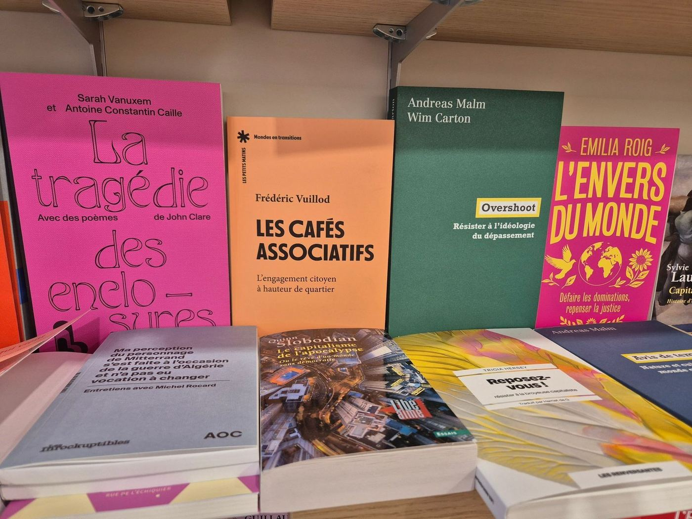
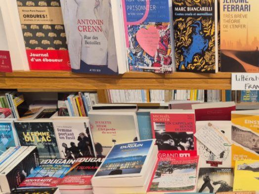

Littérature générale
Plongez dans un autre monde aux quatre coins du globe (littérature francophone, étrangère et traduite).
Librairie indépendante depuis 1976
Rue Charles de Gaulle, à Roanne. Cinq libraires qui lisent, qui signent leurs conseils, et qui commandent à peu près tout ce qui existe. Ici, la sélection de la maison — consultable, filtrable, et réservable en deux clics.
Librairie Indépendante de RéférenceLabel attribué par le ministère de la Culture
Nos rayons
Les intitulés et les descriptions sont ceux de la librairie — ce sont eux qui disent le mieux ce qu'on trouve dans chaque rayon.
Plongez dans un autre monde aux quatre coins du globe (littérature francophone, étrangère et traduite).
Des livres à toucher, des livres sonores, des albums, des documentaires, des romans de première lecture au Young Adult… à lire de 0 à 100 ans !
Des témoignages, des ouvrages de référence, des livres utiles au quotidien, des essais d'actualité, de politique, d'économie et d'histoire.
Découvrez une multitude d'univers illustrés variés. Du roman graphique au manga, en passant par la BD classique et la BD moderne, il y en a pour tous les goûts !
La table des libraires
Cherchez un titre, un auteur, un éditeur. Filtrez par rayon, par libraire, ou ne gardez que ce qui n'est pas encore paru. Mettez de côté ce qui vous tente : le récapitulatif de réservation s'écrit tout seul, prêt à partir à la librairie.
Rencontres & événements
Rencontres d'auteurs et d'autrices, soirées éditeurs, dédicaces — à la librairie, à la médiathèque, au cinéma Le Renoir. Voici la saison 2026, telle qu'elle s'est déroulée.
Commander & retirer
Ce sont les canaux que la librairie utilise déjà. La maquette ne les remplace pas : elle prépare le message à leur place.
À toute heure du jour et de la nuit.
contact@librairie-unmondeasoi-roanne.fr
Aux horaires d'ouverture.
04 27 76 26 10
Réservez et retirez sur place, ou faites-vous envoyer un colis.
chezmonlibraire.fr · lesLibraires.fr
CB sur place (dont Amex), chèque, virement bancaire, espèces.
Les chèques et cartes cadeaux des Vitrines de Roanne, les bons cadeaux Chezmonlibraire, les chèques Lire/Culture, les chèques Cadhoc, les coupons Open de l'université Jean Monnet, les chèques Kadéos/Bimpli. Nouveaules chèques TIR GROUPE.
La librairie
Un Monde à Soi est une librairie indépendante installée à Roanne depuis 1976. Elle est labellisée Librairie Indépendante de Référence, un label attribué par le ministère de la Culture aux librairies dont le travail de sélection et d'animation dépasse la simple vente.
Les conseils publiés par la librairie sont signés. Ce sont ces prénoms que vous retrouvez en filtre dans la table des libraires :


Nous trouver